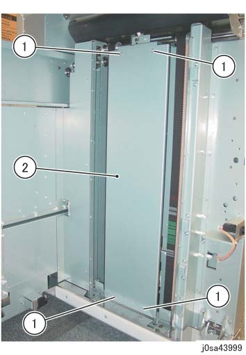
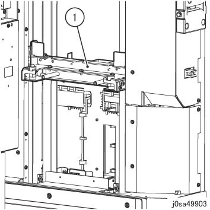
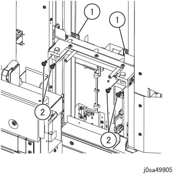

ADJ 39.39.1 左侧/右侧 纸盘 Arm 安装 位置 
参考 PL:PL 39.39, PL 39.40
目的
To make 堆叠器 纸盘 evenly horizontal.
调整

关闭 the 主 开关 和 the Emergency 开关, 关闭 the Breaker, 和 然后 unplug 电源线.
当...时 turning 关闭/脱离 电源开关 的 主机, 确保 the [数据] 灯 不是 flashing.
按下 [Job 状态] to 确认 那里 是 编号 jobs in progress/waiting in the queue. 关闭电源 开关, 然后 确保 the screen 显示 关闭 和 该 [电源 Saver] is 编号 longer flashing.
关闭 the 主 电源 开关, 确认 the [主 电源] 灯 具有 turned 关闭/脱离, 和 然后 unplug 电源插头.
拆卸 Dolly 和 堆叠器 纸盘.
拆卸螺钉 该 固定 the 堆叠 编号 纸张传感器. (图 1)
拆卸螺钉（x4）.
移动 the 堆叠 编号 纸张传感器.

(图 1) sa49952
拆卸 堆叠器 左侧 中央 盖板. (图 2)
拆卸螺钉（x4）.
拆卸 堆叠器 左侧 中央 盖板.

(图 2) sa43998
拆卸 堆叠器 右侧 中央 盖板. (图 3)
拆卸螺钉（x4）.
拆卸 堆叠器 右侧 中央 盖板.

(图 3) sa43999
拆卸 Jig (x2) 该 是 stored at ...的后面 HCS. (PL 39.37)
安装 右侧 纸盘 Arm. (图 4)
安装 右侧 纸盘 Arm to 堆叠器 框架.
插入 Jig (x2) 进入 the hole 的 右侧 纸盘 Arm 和 固定 the Jig at the 位置 的 安装 hole.

(图 4) sa49903
固定 the 右侧 纸盘 Arm to 皮带. (图 5)
Affix 皮带 卡箍 (x2) to 皮带 (x2).
固定 皮带 卡箍 (x2) by using the 螺钉（x4）.

(图 5) sa49905
Similarly, 固定 the 左侧 纸盘 Arm.
拆卸 Jig (x2).